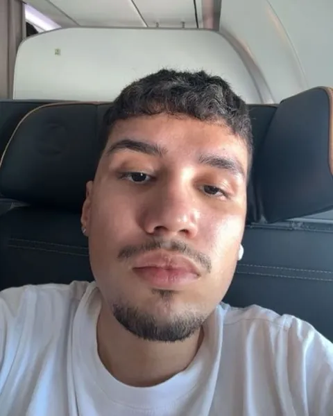

İstanbul Sabahattin Zaim Üniversitesi’nde Sosyal Hizmet öğrencisiyim ve oyun ve dijital ürün stüdyosu En2Studios’un kurucusuyum.
- Okul
- Sosyal Hizmet İstanbul Sabahattin Zaim Üniversitesi, 2. sınıf
- Stüdyo
- En2Studios Kurucu. Oyunlar ve dijital ürünler
Öne çıkan videolar
Projeyi inceleTekerlekli sandalye kullanıcısı olarak erişilebilirlik üzerine ürettiğim içerikler. TikTok ve Instagram'da toplam 1,2 milyondan fazla izlenme.
- 633 bin izlenme İngiltere'de tekerlekli sandalyeyle ilk tren deneyimi TikTok Instagram
- 179 bin izlenme İngiltere'de otobüse binmek: özgürlüğe giden bir yol TikTok Instagram
- 173 bin izlenme Sona dikkat: engelsiz bir İstanbul için TikTok
Projeler
Hepsini gör-
 Kurucu · Oyun ve dijital ürün stüdyosu
En2Studios
Oyunlar, işletmeler için dijital ürünler ve web siteleri geliştiren stüdyo. İlk oyun geliştirme aşamasında.
Kurucu · Oyun ve dijital ürün stüdyosu
En2Studios
Oyunlar, işletmeler için dijital ürünler ve web siteleri geliştiren stüdyo. İlk oyun geliştirme aşamasında.
-
 İçerik üreticisi · Instagram ve TikTok
Tekerlekli Sandalye Vlog
Tekerlekli sandalye kullanıcısı olarak günlük hayatı, seyahati ve erişilebilirliği anlatan videolar. TikTok ve Instagram'da 1,2 milyondan fazla izlenme.
İçerik üreticisi · Instagram ve TikTok
Tekerlekli Sandalye Vlog
Tekerlekli sandalye kullanıcısı olarak günlük hayatı, seyahati ve erişilebilirliği anlatan videolar. TikTok ve Instagram'da 1,2 milyondan fazla izlenme.